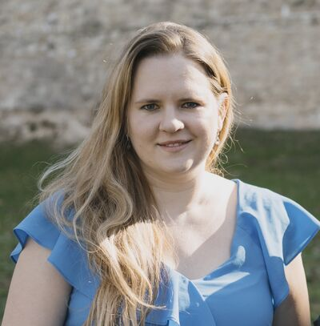
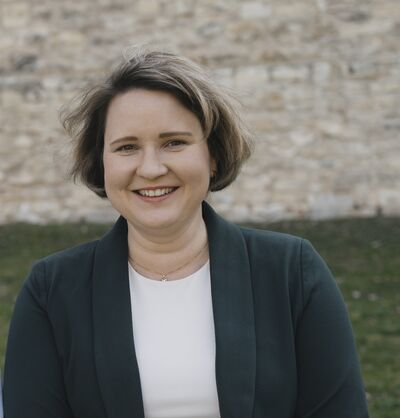
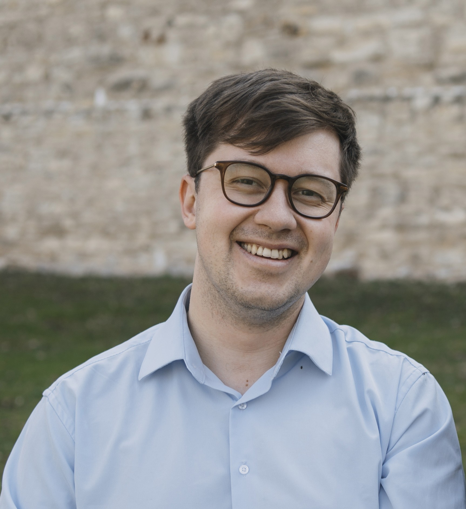
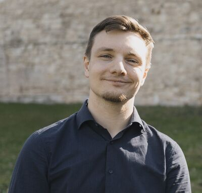
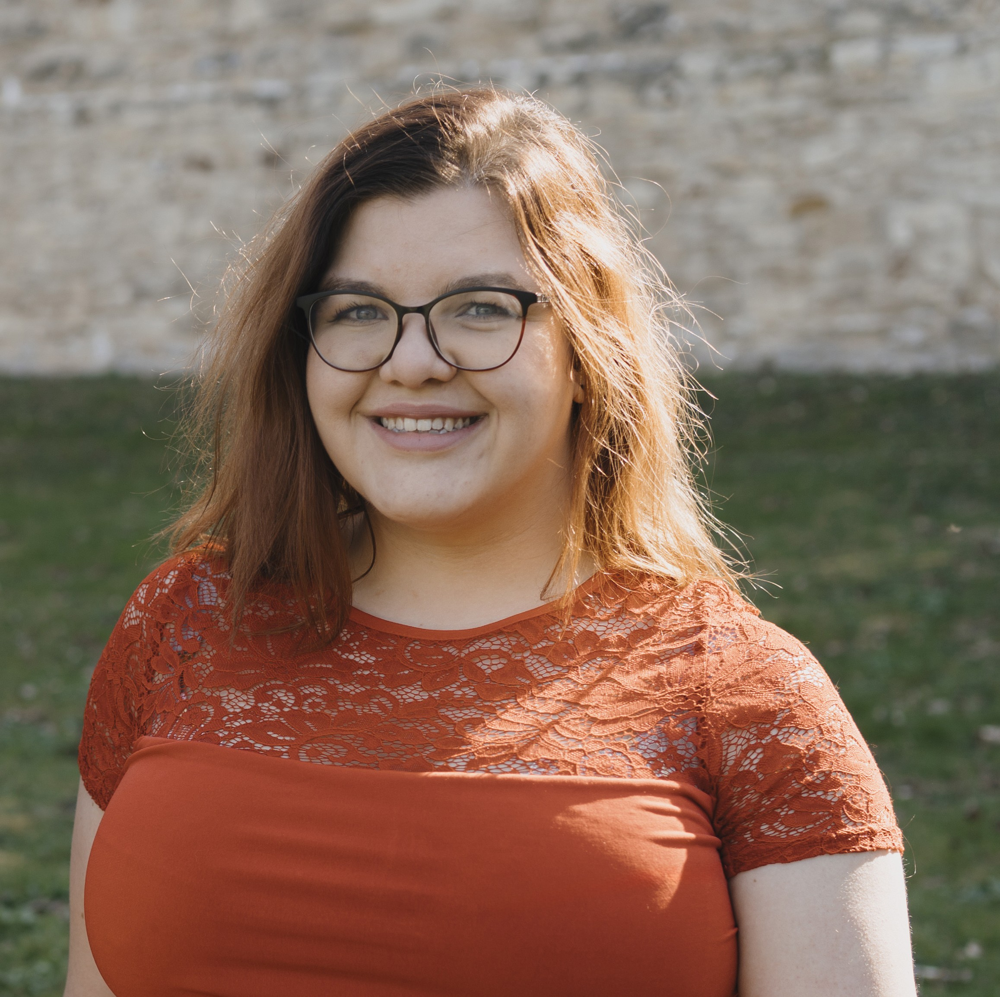
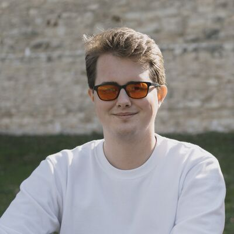
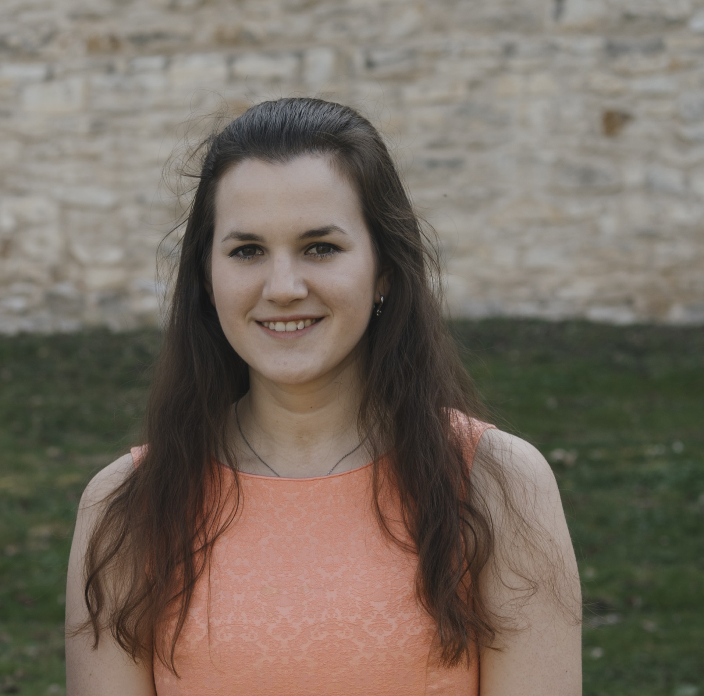

Katolicky podcast o vire, cirkvi a otazkach, ktere nas doopravdy zajimaji.
Katolicky podcast o vire, cirkvi a otazkach, ktere nas doopravdy zajimaji.

Ecclesia — z rectiny shromazdeni, spolecenstvi.
V roce 2018 neexistoval v Cesku zadny katolicky podcast. A tak jsme jeden zalozili.
Kazda epizoda je rozhovor s hostem, ktery ma co rict — biskupem, teologem, vedcem, novinarem nebo clovekem, jehoz pribeh stoji za vyslechnuti. Nebojime se tezkych otazek: mluvime o sexualnim zneuzivani v cirkvi, o roli zen, o pochybnostech i o nadeji. Prave proto, ze verime, ze poctivy rozhovor je formou modlitby.
At jste verici s hlubokymi koreny, nebo clovek, ktery si teprve klade prvni otazky — Ecclesia je misto, kde se ptame nahlas. Pojdte s nami.
Jsme nezavisla skupina katoliku, kteri se Ecclesia podcastu venuji dobrovolne, ve svem volnem case. V beznem zivote jsme socialni pracovnici, ucitele, IT odbornici, akademici. Spojuje nas presvedceni, ze otazky jsou stejne dulezite jako odpovedi.

Vystudovala katolickou teologii a socialni praci. Pracuje se seniory jako socialni pracovnice v Domove sv. Vaclava. U podcastu ji tahne zvedavost — chce vedet, co se deje v cirkvi, a diskutovat o tom s lidmi, kteri maji co rict.

Vystudovala komunikaci a public relations na univerzitach v Americe, nyni pokracuje doktorandskym studiem komunikace na Univerzite v Arizone. Veri, ze pravidelny a pristupny obsah o deni v cirkvi muze nadchnout vice lidi k aktivnimu zapojeni.

Vystudoval mezinarodni vztahy v Kanade a Dansku. Temer cely zivot stravil mimo CR — cirkev a viru zna trochu z jine strany. Do podcastu prinasi tento vnejsi pohled.

Vystudoval FIT CVUT, pracuje v oblasti pocitacove bezpecnosti jako eticky hacker. Podcast je pro nej zpusob, jak si udrzovat prehled o deni v cirkvi a potkavat se se zajimavymi lidmi.

Absolventka FIT CVUT, pracuje jako software engineer se zamerenim na data. Ve volnem case se venuje projektum se spolecenskym a politickym presahem. Podcast je pro ni mistem, kde se daji otvirat temata, o kterych se v cirkvi nemluvi dost nahlas.


Nacitam epizody z Podbean...
Ecclesia vznika bez reklam, bez sponzoru a bez institucionalni podpory. Kazdou epizodu pripravujeme ve volnem case, protoze verime, ze katolicky podcast, ktery se neboji tezkych otazek, ma v Cesku smysl.
Pres 120 epizod. Pres 5 let vysilani. A porad dobrovolnicky.
Pokud vam podcast neco dava — podporte nas. Kazda castka pomaha pokryt naklady na techniku, hosting a pripravu novych epizod.